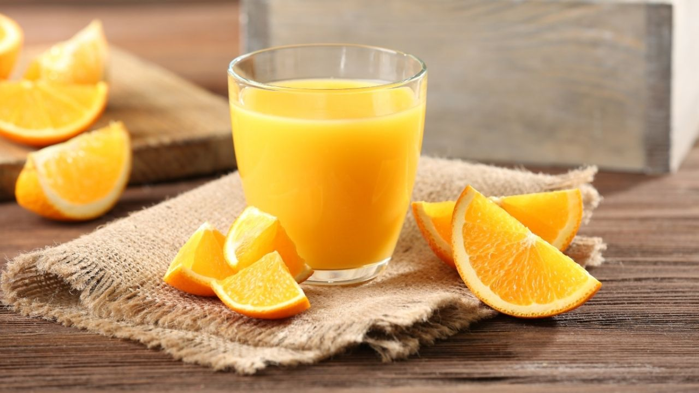

1.
Agua
¿Cuánta agua debo beber por día?
El agua es el componente químico principal del cuerpo y representa aproximadamente del 50 % al 70 % del peso corporal.
Tu cuerpo depende del agua para sobrevivir.
Cada célula, tejido y órgano del cuerpo necesita agua para funcionar correctamente. Por ejemplo, el agua hace posible
todo lo siguiente:
- Elimina los desechos a través de la orina, la transpiración y las deposiciones
- Mantiene la temperatura en niveles normales
- Lubrica y amortigua las articulaciones
- Protege los tejidos sensibles
Recomendación: Es importante estar hidratado para tomar clases, el agua marca ePura puede ser una buena opción
2.
Agua de Jamaica

El agua de jamaica es una de las bebidas con más tradición en la comida mexicana.
Se prepara utilizando las flores secas del Hibiscus sabdariffa, un arbusto anual que se cultiva alrededor del mundo en las zonas tropicales,
ya que requiere de terrenos húmedos y climas cálidos.
Recomendación: Una rica bebida que puede acompañar a cualquier plato principal
3.
Jugo de naranja
Si bien el jugo de naranja no es precisamente sano debido a que al realizarlo eliminas toda la pulpa y fibra que contiene la fruta
y solo te quedas con las calorias, azucares y vitaminas puedo decir que es una bebida deliciosa perfecta para
ayudarte a empezar un día productivo
Recomendación: Una bebida deliciosa perfecta para un buen desayuno lleno de energías

4.
Limonada
La limonada es una bebida universalmente conocida, es fácil de preparar y los beneficios que el limón aporta para la salud son numerosos,
por eso se ha convertido en la bebida favorita para acompañar cualquier momento del día incluyendo por supuesto el de las comidas.
Su sabor cítrico hace que quede muy bien en cualquier tipo de comida y bebida y además sus beneficios para la salud convierten al limón en un ingrediente muy apetecido
Su sabor cítrico hace que quede muy bien en cualquier tipo de comida y bebida y además sus beneficios para la salud convierten al limón en un ingrediente muy apetecido
Recomendación: Sin duda una de las bebidas más consumidas y perfecta para comidas, puede ser
un perfecto sustituto del agua de jamaica o viseversa